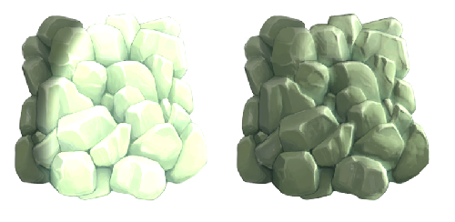
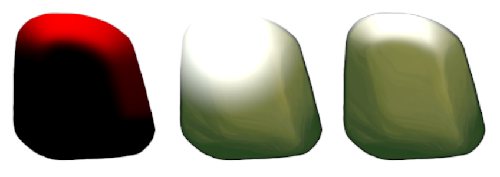
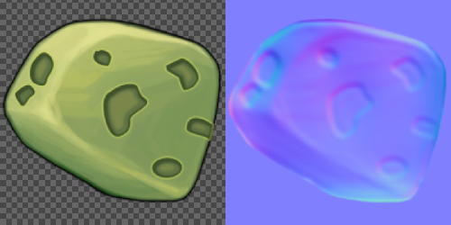

To add surface detail such as bumps, grooves, and scratches to a 2D spriteA 2D graphic objects. If you are used to working in 3D, Sprites are essentially just standard textures but there are special techniques for combining and managing sprite textures for efficiency and convenience during development. More info
See in Glossary in the Universal Render PipelineA series of operations that take the contents of a Scene, and displays them on a screen. Unity lets you choose from pre-built render pipelines, or write your own. More info
See in Glossary (URP), add the following texture maps:
In 2D projects, normal maps and mask maps are called secondary textures of the sprite. You add them using the Secondary Textures overlay of the Sprite Editor window.


Note: The mask map texture you add as a secondary texture is different to the sprite maskA texture which defines which areas of an underlying image to reveal or hide. More info
See in Glossary you use to hide or reveal parts of a sprite.
To import a texture map, follow these steps:
To make sure the lighting works correctly, make sure your texture map lines up with the sprite texture. Unity samples texture maps using the same uv coordinates it uses to sample the sprite texture.

Add the normal map or mask map as a Secondary Texture to the sprite. Follow these steps:
Make sure the Sprite RendererA component that lets you display images as Sprites for use in both 2D and 3D scenes. More info
See in Glossary component of the sprite uses a material that supports texture maps, for example the default Sprite-Lit-Default material. For more information, refer to Prepare and upgrade sprites for 2D lighting in URP.
Select the original texture of the sprite in the Project window, then select Open Sprite Editor.
Select the Secondary Textures tab from the dropdown.
Unity displays the Secondary Textures overlay in the bottom-right corner of the Sprite Editor window.
In the Secondary Textures overlay, select the Add (+) button to add a new secondary texture.
Select the Name dropdown, then select _NormalMap for a normal map, or _MaskTex for a mask map.
Note: The dropdown might also include names used by other Unity packages you installed, even if you have since uninstalled the packages.
To select your normal map or mask map, drag it from the Project window to the Texture field, or select the picker (⊙).
Select Apply.
To display the secondary texture in the Sprite Editor window, select it in the Secondary Textures overlay. To display the sprite texture again, select anywhere outside of the overlay.
To check the effect of the texture map on the sprite texture under a 2D light, follow these steps: